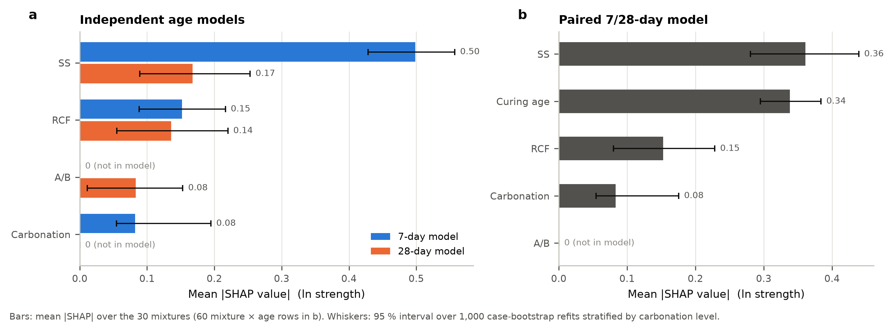
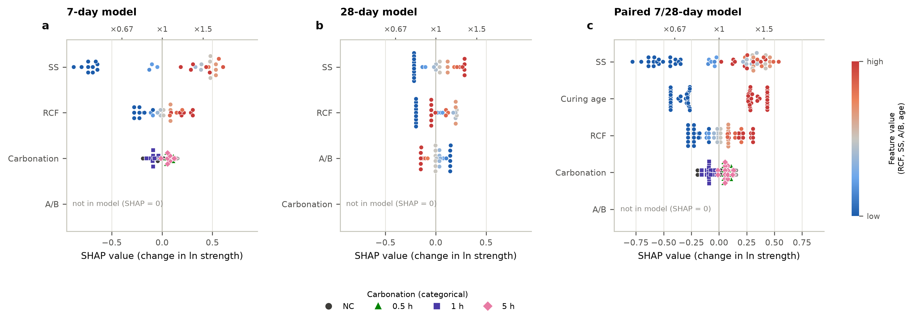
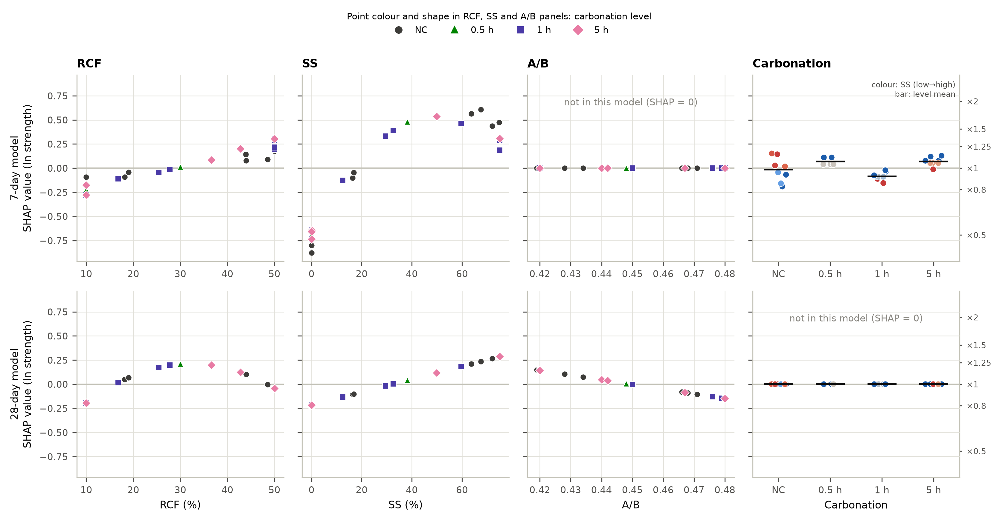
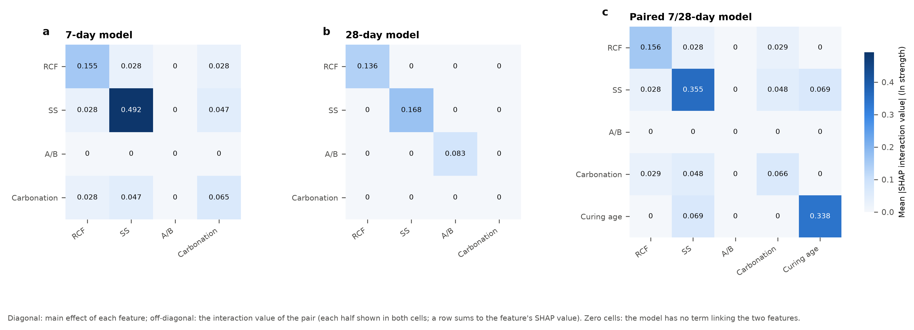

Key points
- 7-day model. SS dominates (mean |SHAP| 0.50 on the ln scale, about 4.6 MPa; ranked first in 99 % of refits), followed by RCF (0.15) and carbonation (0.08). The largest interaction is SS × carbonation (0.095 for the pair), then RCF × carbonation and RCF × SS (0.057 each). A/B is not in the model.
- 28-day model. SS (0.17), RCF (0.14) and A/B (0.08) are closer together; SS is ranked first in 66 % of refits and RCF in 29 %. Carbonation is not in the model and the model has no interactions, so every interaction value is zero.
- Paired model. Curing age (0.34) is almost as influential as SS (0.36). Its only interaction is with SS (0.137 for the pair): the 28-day advantage is largest in NaOH-only mixes.
Figures






Tables
Mean |SHAP| importance
| Model | Input | Mean |SHAP|, ln [95 % boot] | Typical factor | Mean |SHAP|, MPa [95 % boot] | Ranked first in refits |
|---|---|---|---|---|---|
| 7-day model | RCF | 0.152 [0.088–0.216] | ×1.16 | 1.37 [0.76–2.30] | 0 % |
| 7-day model | SS | 0.498 [0.428–0.557] | ×1.65 | 4.59 [3.96–5.57] | 99 % |
| 7-day model | A/B | 0 (not in model) | – | 0 | 0 % |
| 7-day model | Carbonation | 0.082 [0.055–0.195] | ×1.09 | 0.87 [0.60–2.59] | 1 % |
| 28-day model | RCF | 0.136 [0.055–0.220] | ×1.15 | 2.60 [1.00–4.37] | 29 % |
| 28-day model | SS | 0.168 [0.089–0.253] | ×1.18 | 3.25 [1.71–5.14] | 66 % |
| 28-day model | A/B | 0.083 [0.011–0.153] | ×1.09 | 1.63 [0.22–2.98] | 5 % |
| 28-day model | Carbonation | 0 (not in model) | – | 0 | 0 % |
| Paired 7/28-day model | RCF | 0.153 [0.080–0.228] | ×1.16 | 2.06 [1.09–3.36] | 0 % |
| Paired 7/28-day model | SS | 0.361 [0.280–0.439] | ×1.44 | 4.31 [3.24–6.02] | 68 % |
| Paired 7/28-day model | A/B | 0 (not in model) | – | 0 | 0 % |
| Paired 7/28-day model | Carbonation | 0.083 [0.055–0.175] | ×1.09 | 1.23 [0.82–3.02] | 0 % |
| Paired 7/28-day model | Curing age | 0.338 [0.295–0.384] | ×1.40 | 4.34 [3.50–5.83] | 32 % |
Non-zero interactions
| Model | Pair | Mean |interaction|, per half | Full pair effect | Typical factor |
|---|---|---|---|---|
| 7-day model | RCF × SS | 0.028 | 0.055 | ×1.06 |
| 7-day model | RCF × Carbonation | 0.028 | 0.057 | ×1.06 |
| 7-day model | SS × Carbonation | 0.047 | 0.095 | ×1.10 |
| Paired 7/28-day model | RCF × SS | 0.028 | 0.056 | ×1.06 |
| Paired 7/28-day model | RCF × Carbonation | 0.029 | 0.057 | ×1.06 |
| Paired 7/28-day model | SS × Carbonation | 0.048 | 0.095 | ×1.10 |
| Paired 7/28-day model | SS × Curing age | 0.069 | 0.137 | ×1.15 |
Per-mixture SHAP values: results/shap/tables/shap_values_*.csv.
Method
SHAP values here are exact interventional Shapley values of each fitted model, computed over all coalitions of its inputs (16 for four inputs, 32 with curing age) with the 30 real mixtures as the background set (60 mixture × age rows for the paired model). No sampling approximation is involved. The inputs are the actual model inputs: RCF (%), SS (%), A/B and carbonation. Carbonation is one categorical input with four levels (NC, 0.5 h, 1 h, 5 h). When it is absent from a coalition its level is taken from a background mixture, so its level indicators and its carbonated × RCF and carbonated × SS terms always move together. It is never treated as a number. The paired model adds curing age (7 or 28 d) as a fifth input. SHAP interaction values follow Lundberg et al. (2020).
Values are computed on the ln-strength scale, where the models were fitted. On that scale the contributions add up exactly and the interaction values correspond one-to-one to the models' interaction terms. Axes also show the multiplicative factor exp(SHAP). The waterfalls and the supplementary figures use the MPa scale (median prediction). Checks: every decomposition satisfies Shapley efficiency to machine precision. The values agree with shap.ExactExplainer (0.51.0) to within 1.9e-15 for values and interaction values. For the additive 28-day model they also equal the closed-form contributions (difference 9.2e-16). Importance intervals come from 1,000 case-bootstrap refits stratified by carbonation level (999 usable for the paired model).
SHAP describes how each fitted model uses its inputs, not causal effects. An input a model does not contain gets exactly zero. The values depend on the background set (here the design itself), and the 28-day model predicts new mixtures much less precisely than the 7-day model (predicted R² 0.38 vs 0.91), so its SHAP pattern is less certain.